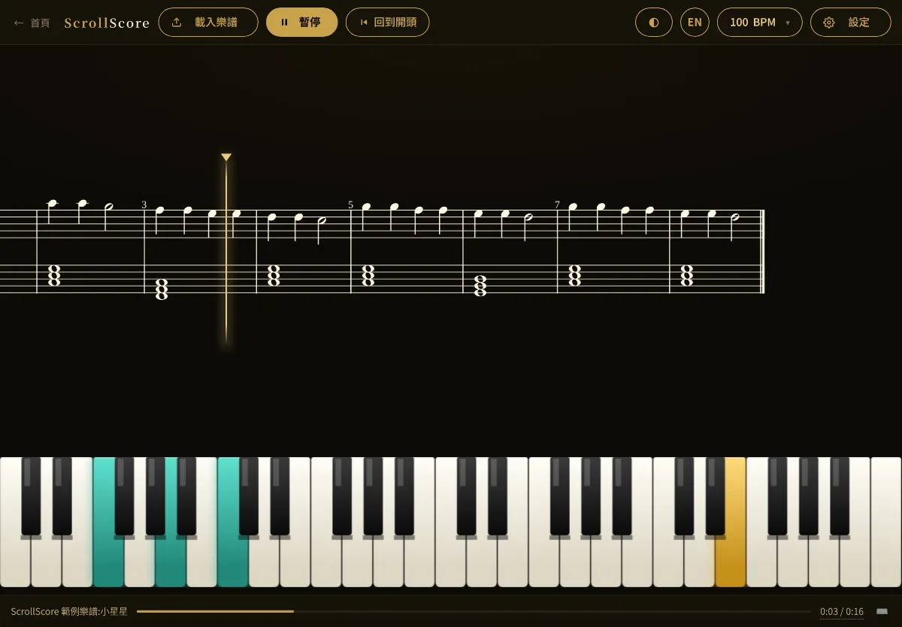

四個工具

ScrollScore
樂譜播放器橫向捲動樂譜播放器，把譜面、鍵盤與節奏放在同一個畫面上，練習跟教學都不必再來回翻頁。
- 支援 MusicXML 匯入，自動排版並隨拍捲動
- 鋼琴鍵盤與鼓組即時視覺化
- 可匯出練習／教學影片
適合：鋼琴教師、自學者、教學影片創作者
開始播放樂譜SightScore
視奏生成依 ABRSM／Trinity 各級規則，程式化產生無限量視奏練習譜，適合每日練習與考前準備。
適合：考級學生、需要出題的教師
產生練習譜HarmonyMap
和聲樂理互動式和弦與音階理論工具，視覺化調性關係，輔助創作、即興與樂理理解。
適合：樂理學習者、編曲與即興演奏者
探索和聲關係LoudMaster
音量正規化將音訊／影片響度自動校正至 -14 LUFS 標準，適用於串流平台發布前處理，全程於瀏覽器端完成。
適合：影音創作者、上架串流平台前的最後一關
校正響度常見問題
需要付費或註冊嗎？
不用。所有工具都是免費的網頁應用，不需要註冊帳號，也不用安裝任何軟體，用瀏覽器打開就能使用。
我的檔案會被上傳到伺服器嗎？
LoudMaster 的響度校正全程在瀏覽器端完成，音訊與影片檔案不會離開你的電腦。
支援哪些樂譜格式？
ScrollScore 支援 MusicXML 匯入；SightScore 則不需要匯入檔案，練習譜是依 ABRSM／Trinity 各級規則直接生成的。
手機或平板可以用嗎？
可以，頁面與工具都採響應式設計。不過影片匯出與音訊處理相當吃運算資源，這類操作建議在電腦上進行。
發現問題或有功能建議？
歡迎透過主網站 musicsteven.com 與我聯絡。